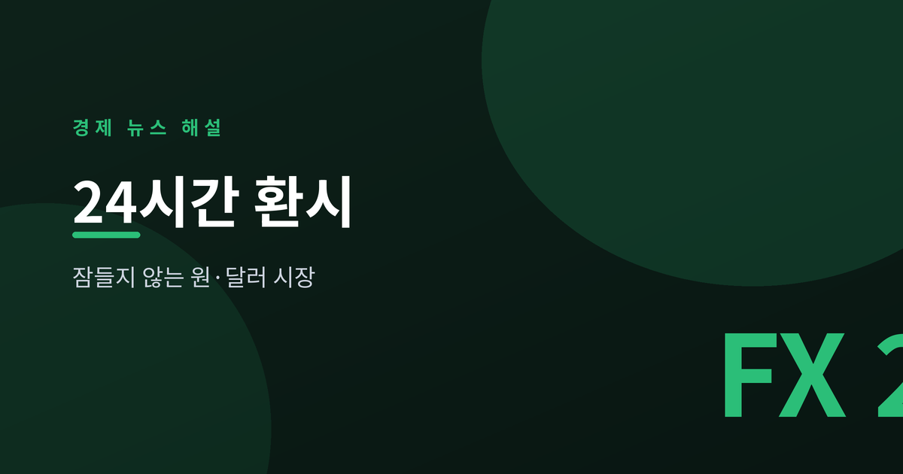
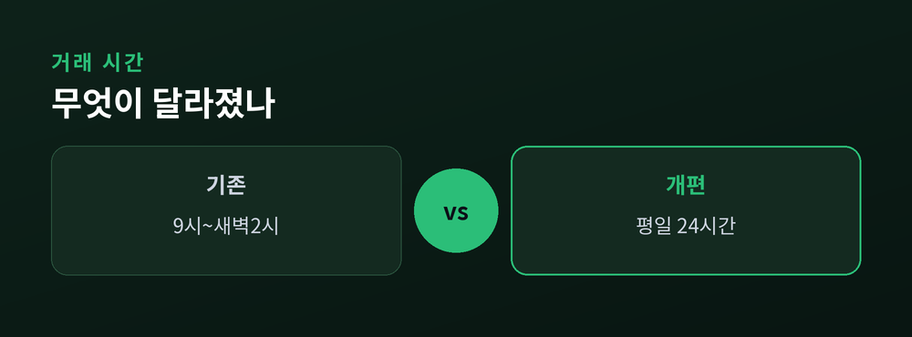
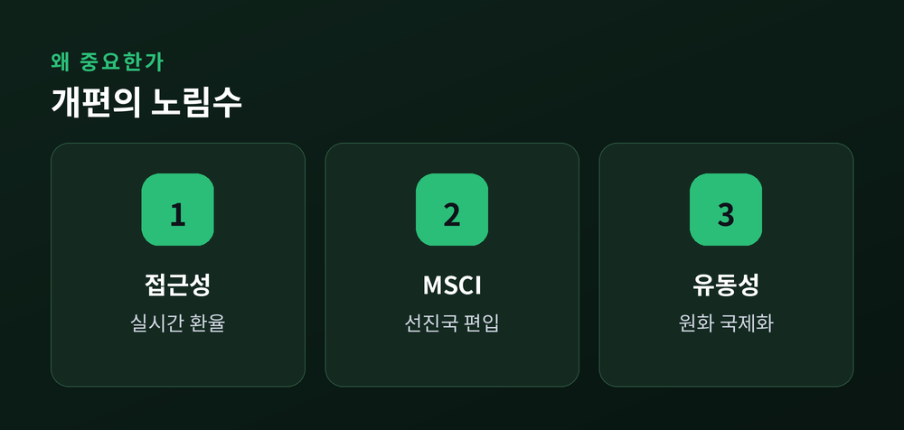
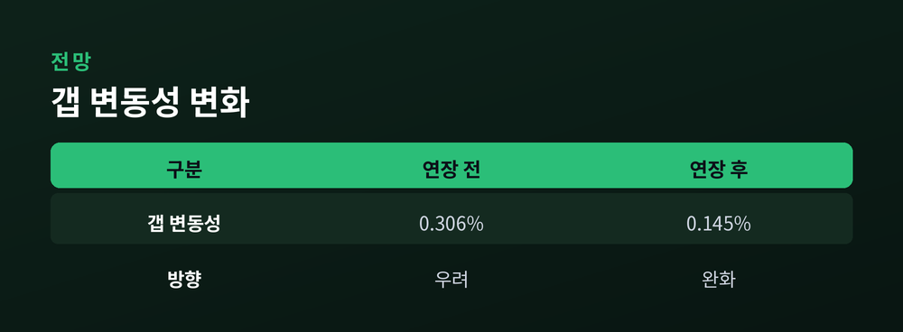

평일 24시간 거래 체제 개막

2026년 7월 6일 월요일, 원·달러 외환시장이 평일 24시간 거래 체제로 바뀌었습니다.
과거에는 오전 9시부터 다음날 새벽 2시까지만 거래할 수 있었습니다.
이제는 뉴욕 서머타임 기준 월요일 오전 6시부터 토요일 오전 6시까지 쉬지 않고 열립니다.
주말과 1월 1일만 빼면, 국내 공휴일에도 거래가 가능합니다.
런던·뉴욕 시간대까지 품으면서, 자정을 넘겨도 환전 창구가 닫히지 않는 셈입니다.

핵심 목적은 원화 국제화입니다.
정부는 이번 개편을 원화를 국제 통화로 끌어올리는 출발점으로 봅니다.
해외 투자자가 자기 시간대에 실시간 환율로 원화를 사고팔 수 있어 접근성이 좋아집니다.
또 하나는 MSCI 선진국지수 편입 요건입니다.
그동안 짧은 거래 시간이 걸림돌이었는데, 이를 풀려는 시도입니다.
로이터·WSJ 등 외신도 이 조치를 지수 편입 포석으로 해석했습니다.
다만 은행은 야간 운영 부담을 집니다. 하나·우리·신한·KB 등이 트레이더를 늘려 3교대 체제를 준비했습니다.

가장 큰 관심사는 변동성입니다.
거래 시간이 길어지면 환율이 더 출렁일 수 있다는 우려가 나옵니다.
| 구분 | 연장 전 | 연장 후 |
|---|---|---|
| 갭 변동성 | 0.306% | 0.145% |
실제로 2024년 1차 연장 이후, 시장이 닫힌 사이 쌓인 충격이 개장 때 한꺼번에 터지는 갭 변동성은 오히려 절반 가까이 줄었습니다.
전문가들은 단계적 확대와 함께 역외 원화 거래(NDF) 수요를 국내로 흡수하는 효과를 기대합니다.

이 글은 정보 제공이며 투자 권유가 아닙니다.